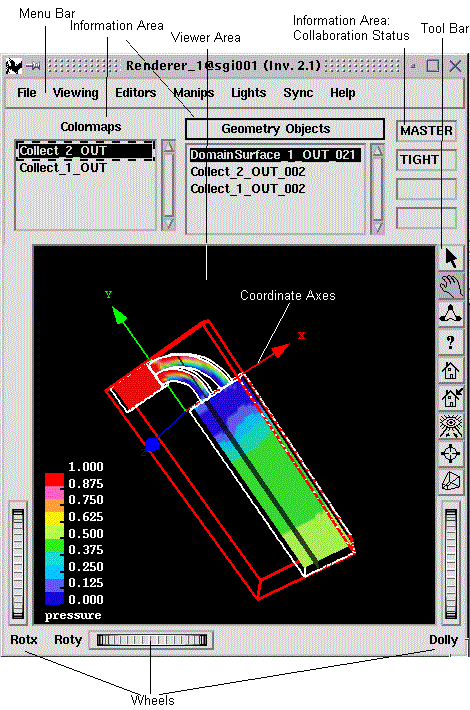

The Renderer visualizes the output data.
It consists out of 3 sections (see figure below):
|  |
You have 4 possibilities to select functions/options
A special feature for collaborative
working is the Telepointer
The information area provides
Notes:
| If you need a larger viewer area you can "set decoration off" (Viewer Popup Menu >> Decoration), i.e. show viewer area only, w/o menu bar, information area, tool bar, and wheels. |
| A Timestep Sequencer is only generated if timesteps are used in the map, e. g. in case of an animated particle trace ( therefore not shown in the figure above). |